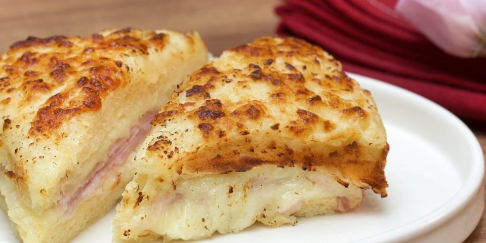

Receita 6 - Croque Monsieur
Minha opinião
Já experimentei?: Não
Consideração: Apesar de poder parecer apenas um sanduíche comum com um pouco de recheio a mais, essa é uma receita muito interessante de se experimentar pela primeira vez devido à maneira que o pão do sanduíche é preparado e a abundância de recheio na receita.
Com quem eu provaria esse prato?
Nazaré Tedesco (Renata Sorrah)
Esse prato nem tem muito a ver com ela, mas a gente daria boas risadas relembrando do meme da nazaré confusa e falando da sua novela
Receita
Ingredientes
- 2 colheres de sopa de manteiga
- 2 colheres de sopa de farinha de trigo
- 2 xícaras de chá de leite morno
- Noz-moscada a gosto
- Sal a gosto
- 2 fatias de pão de sanduíche (sem casca)
- 2 fatias de presunto
- 80 gramas de queijo mussarela ralada
Modo de preparo
Passo 1 - Em uma panela, coloque a manteiga e deixe derreter.
Passo 2 - Adicione a farinha, misture bem e deixe cozinhar por cerca de 2 minutos, sem parar de mexer.
Passo 3 - Gradualmente vá acrescentando o leite e mexendo.
Passo 4 - Deixe cozinhar até o molho engrossar
Passo 5 - Desligue o fogo, coloque a noz-moscada, o sal e misture bem
Passo 6 - Passe o molho em 2 fatias de pão, coloque o presunto, o queijo ralado e feche eles formando um sanduíche.
Passo 7 - Passe uma cama de molho em cima do sanduíche, salpique queijo ralado e leve para o forno preaquecido a 180º graus até gratinar.